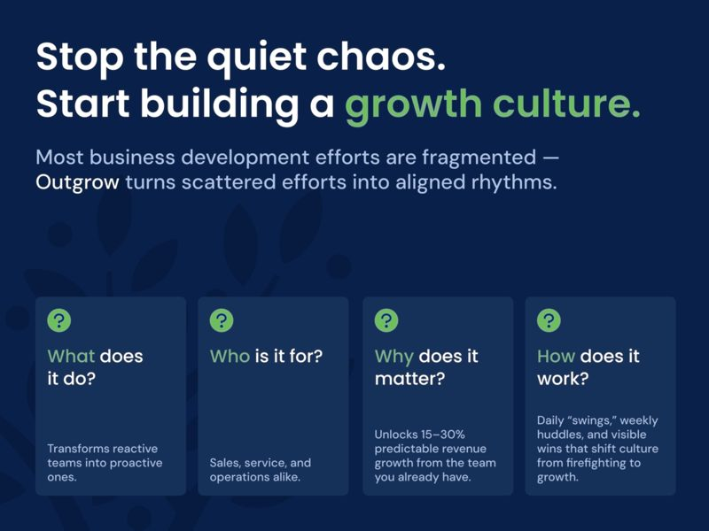
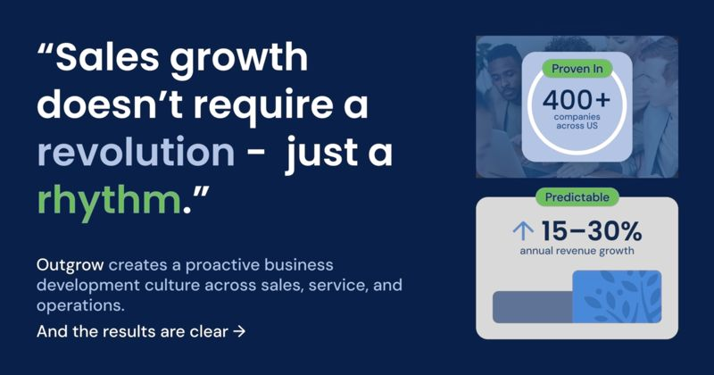
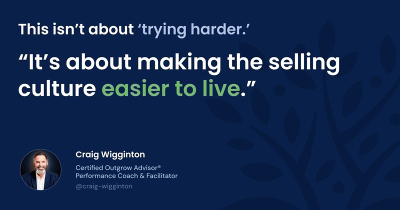

The Culture Multiplier: How Managers Keep Belief Alive When You’re Not in the Room
A proactive culture doesn’t happen by accident. Discover how managers turn belief into a weekly rhythm that keeps teams aligned and consistently growing.
ReadCulture & Mindset

(Part 1 of the PERMA Series)
Not maliciously. Not because people don’t care. But because the entire effort is fragmented — emotionally, tactically, and operationally. Sales, service, and operations work hard… but not together. And the cracks are starting to show.
You feel it every time you overhear a sales rep say, “I had no idea they were even working on that project.” Or when a great customer goes quiet and nobody follows up, not because they don’t care, but because everyone assumes “someone else is handling it.”
You see it in your CRM data, or lack thereof. In the way 80% of your team’s communication goes to 20% of your accounts. In the post-it notes, buried emails, and missed referrals. In the way “opportunity” is a euphemism for “hope” rather than something methodically surfaced and tracked.
And worst of all?
You feel it in the energy. You feel it in the room.
That unspoken drag where everyone’s busy, but no one’s excited. Where customer service is firefighting. Sales is isolated. Operations is reactive. And nobody — not even your best players — seems fully confident or connected in the growth mission.
Because when a business runs like this, disconnected and defensive, here’s what happens:
So while your team could be uncovering six figures of revenue every Monday morning in 15-minute team huddles (real story, by the way), instead you’re leaving low-hanging fruit to rot on the tree. You’re spending energy on firefighting instead of opportunity-finding.
And most companies — even good ones — are simply not built to solve it on their own.
The vast majority of growth initiatives do not address the fear that keeps salespeople from proactively selling to begin with.
But here’s the good news: this problem isn’t permanent. It’s just the result of default thinking. And with a few simple mindset shifts, a little structure, and a system that your team can actually use — you can turn this around fast.
The first step?
Rethink what a healthy business development culture looks like, and more importantly, what it feels like when it’s actually working.
Imagine walking into your office on a Monday morning, coffee in hand, and instead of the usual scramble, you witness something very different:
A short, high-energy team huddle just wrapped. The COO and CRO are both smiling because the entire customer-facing team is aligned on who to call and what to focus on this week. The total number of Proactive Actions the team took last week is up. Everyone is swinging the bat. And everyone is talking about customers — not problems, but possibilities to help more people more.
No stress. No drama. No wasted motion. Just helpful, proactive communication rippling through the business like a current.
This is what a healthy business development culture looks like in action.
It’s not a rah-rah motivational talk. It’s not a flavor-of-the-month program. It’s not “sales training.” It’s something more elemental, and far more valuable:
It’s a system where your people know — really know — how valuable they are to your customers. And because they know that, they show up boldly, optimistically, and consistently.
That’s the magic of a proactive business development culture: it shifts the emotional baseline of your entire organization. From fear to confidence. From silence to conversation. From “not my job” to “how can I help?”
And the ROI? It’s not abstract.
In company after company, from construction firms to professional services to logistics, this mindset shift alone unlocks 15–30% predictable revenue growth. Not from new products. Not from new people. But from fully activating the team you already have.

Here’s what that rhythm looks like:
And here’s the best part: this doesn’t take hours. It takes minutes per day.
Because the work isn’t complex. It’s just rare.
Most of your competitors aren’t doing this. They’re still reacting, still siloed, still playing defense. Which means you don’t have to be perfect, you just have to be better than the default.
You don’t need extroverts. You don’t need charismatic closers. You don’t even need sales experience. You just need a process your team believes in, and a system that makes winning feel natural.
That’s what Outgrow does. It embeds these rhythms. It equips your team. It eliminates guesswork. And it builds a culture where growth is not only possible, it’s predictable.
This isn’t about “motivating” your people.
It’s about reminding them who they are. And then giving them the tools and structure to show up that way, every single day.
Let’s be blunt: most Owners & CEOs don’t need another marketing and sales strategy. They need a system their team will actually follow.
Because without structure, even the best ideas collapse under the weight of real life: urgent emails, service fires, and that quote that’s already two days late.
That’s why the Outgrow System was built for one thing above all: daily use. Not someday. Not in a workshop. Today.
If it’s not simple, fast, and repeatable, it won’t get done. And if it doesn’t get done, it doesn’t matter.
So how does it work?
Outgrow doesn’t start with “selling tactics.” It teaches your people to see themselves differently, as high-value partners who help customers win. And then, crucially, it helps them act on that belief.
That’s where the rhythm begins.
We call them “swings”, meaning small proactive actions your customer-facing folks take every day to increase helpful, positive communication. Just like a batter in baseball, the more swings you take, the more likely you are to connect – and the batting averages will start to play out.
Here’s what a swing might look like:
And here’s the kicker: these take less than 15 minutes per day. Total.
Now multiply 5 touches by 20 people on your team. That’s 100 meaningful customer touches every day. 500 a week. Over 25,000 per year.
That’s more than a sales effort — it’s a true business development culture where proactive communication becomes second nature.
Every Monday, your team gathers for a 15-minute Outgrow Huddle. All customer-facing members in sales, ops and service share:
No fluff. No “update hell.” Just momentum and coordination.
This one rhythm alone breaks down silos. A rep hears what ops uncovered. Ops hears what sales closed. Everyone leaves reminded: “We’re not in this alone.”
Outgrow also provides basic tracking and powerful visibility into the actions your team is taking. Not to micromanage, but to recognize.
You’ll see who’s making swings. You’ll celebrate wins. You’ll create a culture where action is visible and effort is rewarded.
Managers stop wondering, “What’s my team doing?” And instead start saying, “I saw what you did, and it’s working.”
In one construction firm, a single 15-minute Outgrow Huddle uncovered $280,000 in new opportunity from existing customers. In one security company, a 3 minute proactive call by an operations manager surfaced a $90,000 new opportunity. That’s not a moonshot. That’s a system working.
And across 400+ B2B companies, Outgrow consistently drives 15–30% predictable revenue growth – without adding new products, people, or headcount.
Outgrow is not about “trying harder.” It’s about making the selling culture easier to live.

With the right rhythm, the right language, and a little leadership attention, even your quietest team members will start stepping up, speaking up, and selling with confidence.
And that’s how real growth becomes predictable, and permanent.
Let’s level with each other for a moment:
If you’re reading this, chances are you’re already thinking about your team, not in frustration, but in possibility. You know they’re capable of more. You see the talent. You believe in their heart. But you also feel the drag of misalignment. You know there’s more fuel in the tank – more revenue, more confidence, more impact – and you’re tired of leaving it behind.
This isn’t a knowledge problem. You’ve already invested in tools, training, software. It’s not about trying harder. It’s about designing your culture intentionally, so that the growth you want is built into the daily rhythm of the business.
Right now, most companies have unintentionally normalized:
And because of that, they’re leaving behind millions in lifetime customer value, not because the opportunities aren’t there, but because their team isn’t emotionally supported and tactically equipped to see them, name them, and act on them.
But this is the moment you get to flip the switch.
This is your tipping point, where fragmentation turns into flow. Where “sales” stops being a dirty word and “helping more customers” becomes a shared identity.
Imagine six months from now:
With hundreds of companies running Outgrow, here’s what I can tell you with certainty:
You don’t need more talent.
You don’t need more time.
You don’t have to be perfect. You just have to be present, helpful, and confident in the value you provide.
That’s what Outgrow helps you install: a system where being proactive is simple, normal, and joyful.
If you’ve made it this far, there’s a reason.
Message me today to set up a 15-minute strategy call about launching an Outgrow Project for your team.
It might be the most valuable conversation you’ve had all quarter.
Keep reading
A proactive culture doesn’t happen by accident. Discover how managers turn belief into a weekly rhythm that keeps teams aligned and consistently growing.
ReadDiscover how fostering accomplishment at work drives motivation, momentum, and measurable growth across your entire sales culture.
ReadMeaning isn’t a luxury — it’s a performance driver. See how creating a high-performance sales culture turns morale and engagement into profit.
Read